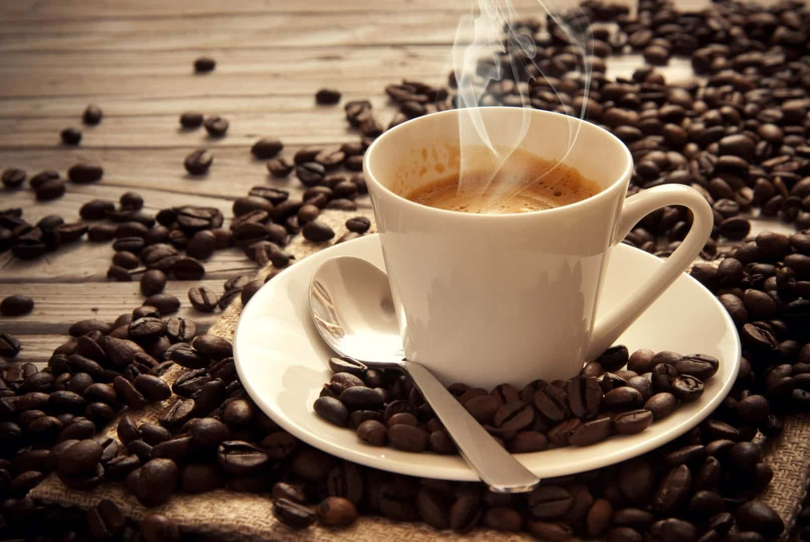
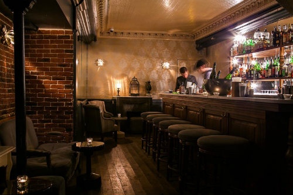
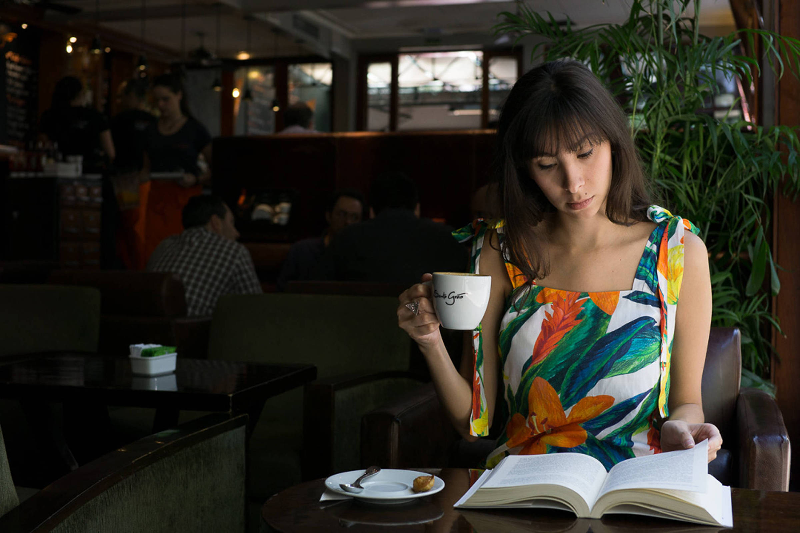

É o nosso cargo chefe. Feito com grãos premiados da região, com certeza é a melhor opção para quem gosta de um clássico.

Café & Conforto
O melhor café da cidade em um espaço aconchegante, perfeito para trabalho e leitura.
Venha se aconchegarO mais amado. Feito com muito amor, este classico italiano arrasa corações.
Tem especialistas que falam que com a proporção certa de um bom café com leite cremoso, você chega aos céus.
Simplesmente o favorito da criançada, mas não se deixe enganar, também agrada os mais refinados paladares.
E vários outros!
Conhecer cardápioCafeteria aconchegante
Perteito para leituras
Ótimo para trabalho